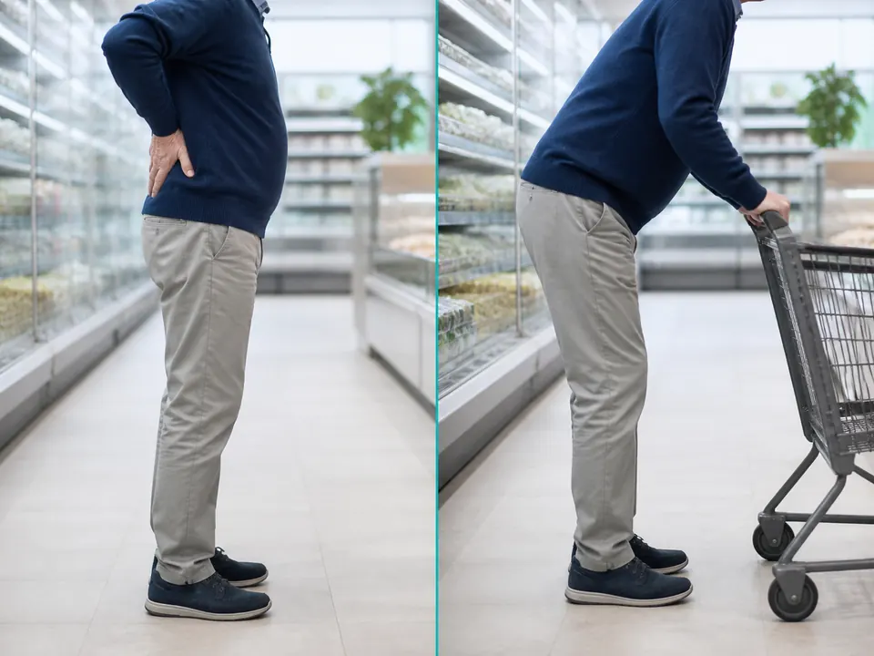
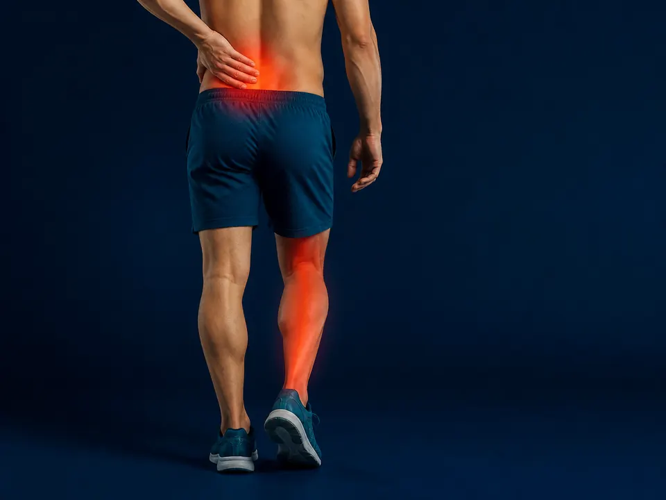
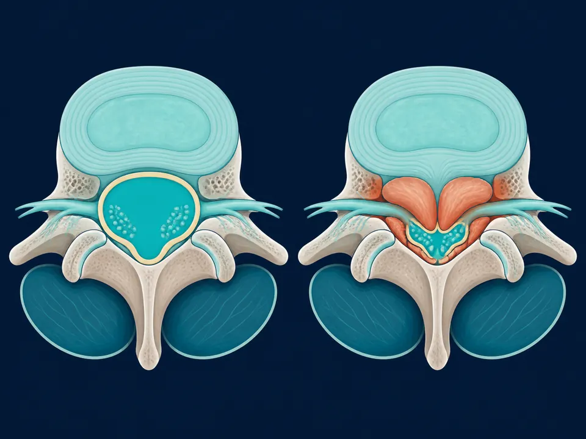

Si tu dolor de espalda baja aparece o empeora al caminar y desaparece cuando te sientas o te inclinas hacia adelante, ese patrón tiene nombre: se llama claudicación neurogénica, y es el síntoma más característico de la estenosis lumbar. Es un estrechamiento del canal por donde pasan los nervios de la columna, que los comprime justo cuando te pones de pie o caminas. No es "desgaste normal que hay que aguantar": tiene diagnóstico claro con resonancia y tratamiento efectivo. Como neurocirujano de columna en Querétaro, aquí te explico por qué ocurre, cómo se confirma y cuándo conviene operar.
¿Qué es la estenosis lumbar?
La estenosis lumbar es el estrechamiento del canal espinal en la parte baja de la espalda, el túnel óseo por donde viajan la médula y las raíces nerviosas hacia las piernas. Cuando ese espacio se reduce, los nervios quedan apretados y aparecen dolor, hormigueo, pesadez y debilidad en las piernas. Es una de las causas más frecuentes de cirugía de columna después de los 60 años, precisamente porque el estrechamiento suele ser resultado del desgaste natural de las articulaciones y ligamentos con la edad.
La palabra clave para entenderla es espacio: el problema no está en un músculo ni en un disco aislado, sino en cuánto sitio les queda a los nervios para pasar. Todo lo que reduce ese sitio —artrosis, ligamentos engrosados, una hernia o un deslizamiento vertebral— puede producir estenosis.
¿Por qué el dolor mejora al sentarte o inclinarte hacia adelante?
Porque la postura cambia el tamaño del canal. Cuando te inclinas hacia adelante, el canal lumbar se abre unos milímetros y libera a los nervios; cuando te enderezas o caminas erguido, el canal se cierra y vuelve a comprimirlos.
Ese detalle mecánico explica el signo más típico —y más útil para el diagnóstico— de la estenosis lumbar, y es la razón por la que tanta gente descubre, casi sin darse cuenta, posturas que la alivian.

Muchos pacientes cuentan lo mismo: en el súper caminan sin problema mientras van encorvados empujando el carrito, pero en cuanto se enderezan o caminan sin apoyo, las piernas se cansan y tienen que detenerse. Ese "alivio al inclinarse" es tan característico de la estenosis lumbar que en consulta lo usamos como una de las primeras pistas para distinguirla de otros dolores de espalda.
¿Qué se siente? Los síntomas de la estenosis lumbar
El síntoma central es la claudicación neurogénica: molestias en las piernas que aparecen al caminar o estar de pie y ceden al sentarse. Lo que la gente describe en consulta suele ser:
- Dolor, ardor o pesadez en las piernas que empeora al caminar y obliga a parar cada pocas cuadras.
- Alivio al sentarse o inclinarse hacia adelante.
- Entumecimiento u hormigueo en glúteos, muslos o pantorrillas.
- Sensación de piernas débiles o "de trapo" tras caminar un rato.
- Tendencia a caminar ligeramente encorvado hacia adelante.
Si te reconoces en varias de estas frases, vale la pena estudiarlo. La estenosis lumbar avanza despacio, y la distancia que puedes caminar es un buen termómetro de cómo va.

¿Es estenosis lumbar o mala circulación en las piernas?
Es la confusión más frecuente, y distinguirlas importa porque el tratamiento es totalmente distinto. Ambas producen dolor en las piernas al caminar (por eso las dos se llaman "claudicación"), pero el origen es diferente: en la estenosis el problema es un nervio comprimido; en la circulación, una arteria estrechada. Estas señales ayudan a diferenciarlas:
| Señal | Estenosis lumbar (nervio) | Circulación (arteria) |
|---|---|---|
| ¿Qué alivia el dolor? | Sentarse o inclinarse hacia adelante | Simplemente detenerse (aunque sigas de pie) |
| Ir en bicicleta | Se tolera bien (vas inclinado) | También duele (el músculo pide sangre) |
| Pulsos en el pie | Normales | Débiles o ausentes |
| Tipo de molestia | Hormigueo, entumecimiento, pesadez | Calambre muscular apretado |
No es una prueba definitiva —solo un médico lo confirma con exploración y estudios—, pero el "sí camino en bici y sí me alivia inclinarme" apunta con fuerza hacia el nervio, no hacia la arteria.
¿Qué causa la estenosis lumbar?
En la mayoría de los casos, la causa es el desgaste de la columna con los años (estenosis degenerativa). Varios cambios reducen poco a poco el espacio del canal:
- Artrosis de las articulaciones vertebrales — crecimientos óseos (osteofitos) que invaden el canal.
- Engrosamiento del ligamento amarillo — un ligamento del canal se vuelve más grueso y ocupa espacio.
- Hernia discal lumbar — un disco que protruye estrecha aún más el paso.
- Espondilolistesis — el deslizamiento de una vértebra sobre otra reduce el canal.
- Estenosis congénita — algunas personas nacen con un canal más estrecho.

¿Cómo se diagnostica la estenosis lumbar?
El diagnóstico combina lo que cuentas con lo que muestran los estudios:
- Historia clínica — el patrón de "duele al caminar, alivia al sentarme" ya orienta muchísimo.
- Exploración neurológica — evalúa fuerza, reflejos y sensibilidad de las piernas.
- Resonancia magnética — es el estudio de referencia: muestra con precisión dónde y cuánto está estrechado el canal, y qué está comprimiendo el nervio.
Con la resonancia en mano se define el plan. Una imagen que muestra estenosis no siempre significa cirugía: lo que decide es cuánto te limita en tu vida diaria, no solo cómo se ve la placa.
¿Se puede tratar sin cirugía?
Sí, y es el primer paso en la mayoría de los casos. El estrechamiento del canal no se revierte solo, pero muchos pacientes controlan bien los síntomas durante años con manejo conservador:
- Fisioterapia dirigida a flexión y fortalecimiento del core.
- Medicamentos antiinflamatorios y para el dolor neuropático, bajo prescripción.
- Infiltraciones epidurales de corticoesteroide en casos seleccionados.
- Ajustes de actividad y control de peso, que reducen la carga sobre la columna.
La cirugía entra en la conversación cuando este manejo deja de ser suficiente.
¿Cuándo se necesita cirugía?
La cirugía de estenosis lumbar se considera cuando:
- El dolor es incapacitante y no mejora con varias semanas de tratamiento conservador.
- La distancia que puedes caminar se reduce cada vez más y afecta tu vida diaria.
- Aparece debilidad en las piernas o entumecimiento progresivo.
- Hay pérdida de control de esfínteres — esto es una urgencia quirúrgica.
El objetivo de la cirugía es sencillo: devolverle espacio al nervio (descompresión). Hoy buena parte de estos casos se resuelve por mínima invasión —con incisiones pequeñas y visión endoscópica—, lo que significa menos daño muscular, menos dolor postoperatorio y una recuperación más rápida que la cirugía abierta. Cuando además hay inestabilidad o deslizamiento vertebral, a veces se combina con una fijación (artrodesis) para estabilizar el segmento.
Lo más importante: la estenosis lumbar tiene solución, y el mejor momento para valorarla es antes de que la debilidad en las piernas se vuelva permanente.

Dr. Carlos Mendoza García
Neurocirujano especialista en columna vertebral, con enfoque en técnicas de mínima invasión. Consulta en Querétaro. Conoce su formación →
Contenido informativo revisado por el Dr. Mendoza. No sustituye una consulta médica.